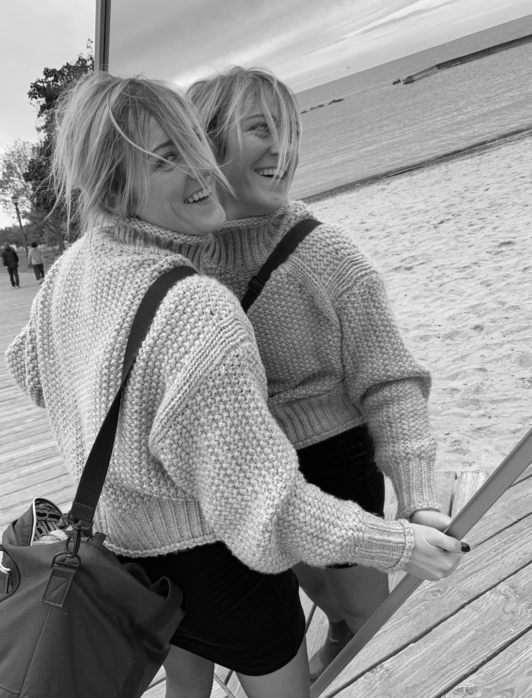
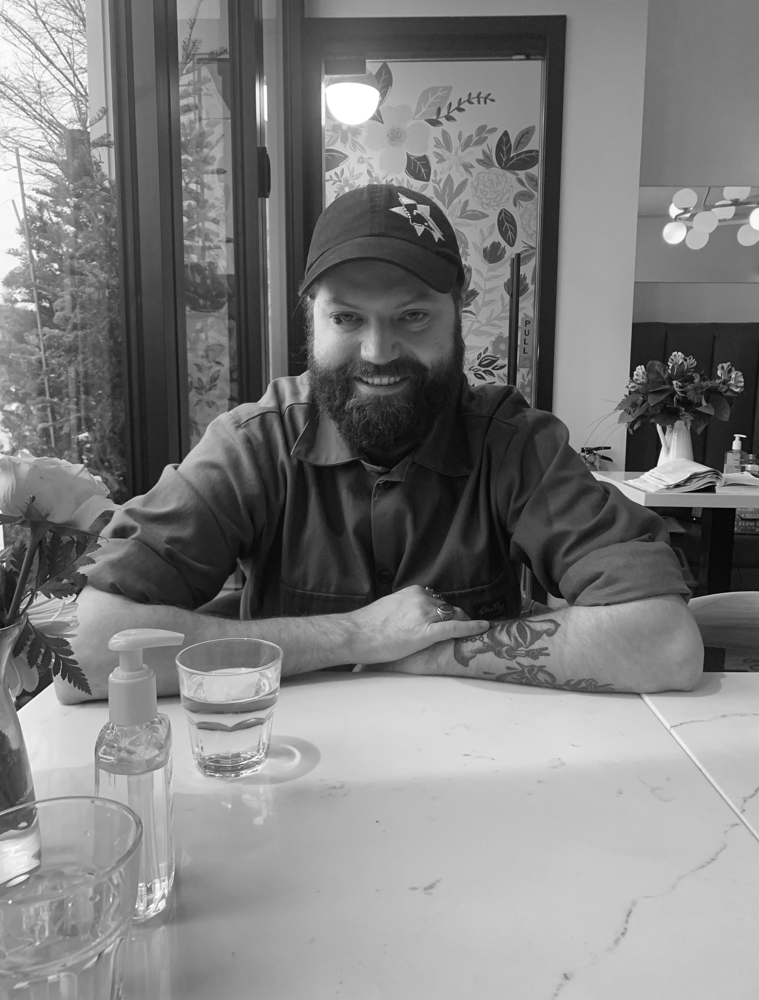

KRISTY LONGPRE
RONCESVALLES, SHE/HER
WHAT DO YOU WISH PEOPLE WOULD STOP SAYING RIGHT NOW
“NOBODY WORKS TO WORK ANYMORE.”
BEST PLACE TO GO IN THE CITY FOR A GOOD CRY
THE BENCHES AROUND SUNNYSIDE BEACH THAT FACE OUT OVER LAKE ONTARIO.
WHAT DO YOU WISH PEOPLE COULD SEE YOU DOING
CRUSHING DANCE MOVES WHILE I BLOW DRY MY HAIR.
DESCRIBE YOUR APOCALYPSE PERSONA
PANIC BUY AS MUCH PB AS POSSIBLE AND FIND A COZY ATTIC TO BUILD A BLANKET FORT TO HIDE IN.
WHAT ARE YOU WORKING ON
I’M MOVING IN A MONTH OR SO AND TRYING TO CREATE THE DREAMIEST FLOOR PLAN POSSIBLE FOR THE NEW APARTMENT. SO MANY DECISIONS TO MAKE. WHAT DO I KEEP/SELL/BUY? WHAT WILL/WON’T WORK IN THE NEW SPACE. EXCUSE ME WHILE I GO MAKE A NEW PINTEREST BOARD.
IS TIME REAL? EXPLAIN
NO BECAUSE THEN WHERE ARE ALL THE TIME-TRAVELERS FROM THE FUTURE?
WHO DO YOU WISH YOU COULD SHARE A KNOWING GLANCE WITH
DOJA CAT
WHAT ARE YOUR WHEELS OF CHOICE
NOTHING LIKE COASTING DOWN THE HIGHWAY IN MY COROLLA ON A SUNNY AFTERNOON LISTENING TO TUNES. SIMPLE AND SWEET.
EERA BJORN HALL
PARKDALE, THEY/HE
WHAT DO YOU WISH PEOPLE WOULD STOP SAYING RIGHT NOW
PEOPLE SAYING THEY ARE ACTIVISTS BECAUSE THEY REPOST ON THE INTERNET.
BEST PLACE TO GO IN THE CITY FOR A GOOD CRY
THERE IS THIS ROCK THAT I GO TO DOWN BY SUNNYSIDE BEACH. IT IS MY CRY ROCK. THE REASON THIS ROCK IS SO GOOD IS BECAUSE IT SITS AT THE BOTTOM LEVEL OF A BARRIER BETWEEN THE LAND AND SHORE. YOU HAVE TO SIT CROSS LEGGED ON IT UNLESS YOU ARE IN THE MOOD TO GET YOUR FEET WET; THEN A GOOD DANGLE MIGHT BE MORE TO YOUR TASTE. THIS ROCK SITS OUT JUST FAR ENOUGH FROM THE OTHER ROCKS THAT IF YOU GO THERE IN DARKNESS IT FEELS LIKE A SINGLE EXPANSE OF ROCK, JUTTING OUT INTO THE MIDDLE OF LAKE ONTARIO. THIS IS THE FREEDOM ROCK, AND HAS HELD MANY A CRY AND MANY A REFLECTION. I ALWAYS LEAVE FEELING A SENSE OF GRATITUDE.
WHAT DO YOU WISH PEOPLE COULD SEE YOU DOING
THE FIRST THING THAT COMES TO MIND IS SINGING, BECAUSE THAT IS WHEN I FEEL MOST AT HOME IN MY BODY. BUT SINGING IN FRONT OF PEOPLE STRIKES SO MUCH FEAR IN ME, BECAUSE I’M ALSO AT MY MOST VULNERABLE. I THINK WHAT THIS QUESTION MAKES ME THINK OF THOUGH, WHICH I OFTEN CIRCLE BACK TO, IS THIS IDEA OF SOLITARY EXISTENCE. ALTHOUGH I FIND MYSELF LIVING AMONGST AND IN RELATIONSHIPS WITH MANY COMMUNITIES, I OFTEN FIND MYSELF REFLECTING ON THE FACT THAT I CAN’T SEE WHAT OTHER PEOPLE SEE, AND OTHER PEOPLE CAN’T SEE WHAT I SEE. THERE ARE THESE MOMENTS OF INEXPLICABLE JOY THAT I EXPERIENCE SOMETIMES, IN MOMENTS OF QUIET REFLECTION WHEN THE PERFECT SONG COMES ON, AND I AM OUTSIDE FORAGING FOR MUSHROOMS, OR WATCHING BEES POLLINATE; WHERE THE LIGHT IS HITTING JUST RIGHT. AND IN THOSE MOMENTS I AM JUST COMPLETELY OVERTAKEN WITH HOW BEAUTIFUL AND CONNECTED EVERYTHING IS. THAT IS WHAT I WANT OTHER PEOPLE TO SEE, I WISH I COULD SHARE THAT.
DESCRIBE YOUR APOCALYPSE PERSONA
LIKELY A GREMLIN CHIC FIXER OF ALL THINGS. IS IT GARBAGE, OR IS IT A TOOL? IS THIS PLANT EDIBLE OR WILL IT LEAD YOU TO AN EXCRUCIATING SLOW DEATH? COME WITH ME AND LET’S FIND OUT. BUILDER OF THINGS, LOVER NOT A FIGHTER, WILL AID IN THE FOSTERING OF A NEW COMMUNITY OF SURVIVORS. LIKELY THE FIRST ONE TO DIE.
WHAT ARE YOU WORKING ON
YARN PROJECTS (RUGS, PILLOW CASES, POUFS &. MORE. YOU WANT IT? ILL YARN IT); MUSIC (SHOEGAZE INSPIRED ALBUM WITH MY ROOMMATE AND DEAR FRIEND, LIVE LOOPING SOLO PROJECTS, FINISHING A PIANO SONG THATS BEEN STUCK IN MY HEAD SINCE I WAS A TEENAGER, RETRAINING MY VOICE AFTER STARTING TESTOSTERONE); REFINISHING PIANOS (THIS IS NEW. AM I OBSESSED? ABSOFUCKINGLUTELY. DO I HAVE SO MUCH TO LEARN? ABSODOUBLEFUCKINGLUTLY). CURRENTLY FOCUSED ON DOING CREATIVELY WHATEVER SPARKS THE MOST JOY, WHATEVER IS SPEAKING TO ME. I KNOW THAT AS A CREATIVE, I HAVE BEEN HYPOCRITICAL AND JUDGEMENTAL OF PROJECTS THAT I’VE INVESTED TIME INTO. ALTHOUGH I THINK IT’S IMPORTANT TO WANT TO BETTER YOUR CRAFT, I KNOW THAT I HAVE ALSO KILLED MY LOVE FOR THINGS BY BEING MILITANT. WHAT I AM WORKING ON RIGHT NOW IS FINDING BALANCE, AND WITH THAT, THE MOST BEAUTIFUL COLLABORATIONS AND SOLO PROJECTS ARE ALIGNING.
IS TIME REAL? EXPLAIN
JURY IS STILL OUT ON THAT ONE. AND BY JURY I MEAN THE MULTIPLE PARADOXICAL TRUTHS THAT ARGUE INSIDE MY BRAINBOX. BUT THIS IS WHAT I THINK ABOUT THAT: IMAGINE A SINGLE BEAT IN THE UNIVERSE; THE UNIVERSE BEING INFINITE. THIS BEAT PUTS INFINITY ON EITHER SIDE. NOW IMAGINE A SECOND BEAT, ALL OF A SUDDEN YOU HAVE THE DIMENSION OF TIME. IT IS THE EVOLUTION OF SOUND AND LIGHT RESPONDING TO ITS ENVIRONMENT THAT GIVES US AN ILLUSION OF MOVEMENT, PROVIDING INDETERMINACY IN UNIVERSAL HAPPENINGS. PEOPLE OFTEN IMAGINE THEMSELVES BEING SEPARATE FROM THE ATMOSPHERE, BUT THROUGH MY WORK, USING THE MEDIUMS OF LIGHT AND SOUND, I STRIVE TO CONNECT THE VIEWER TO THE ENVIRONMENT, CONVERTING THEM FROM THE ROLE OF THE SPECTATOR TO THE ROLE OF THE PARTICIPANT. WAS THAT QUOTED FROM A PAPER I WROTE? YES. AND ALSO, I FEEL LIKE IT CONDENSES WHAT I KNOW TO BE TRUE ABOUT THE PASSAGE OF WHAT WE CALL TIME.
WHO DO YOU WISH YOU COULD SHARE A KNOWING GLANCE WITH
I MEAN, PROBABLY JAMES TURRELL IF WE ARE LOOKING FOR CELEBRITY STATUS. BUT HONESTLY, THOSE MOMENTS WHERE YOU SHARE KNOWING GLANCES WITH YOUR FRIENDS, BECAUSE YOU KNOW EACH OTHER TOO WELL, THOSE MOMENTS ARE HELD JUST AS CLOSE TO MY HEART.
WHAT ARE YOUR WHEELS OF CHOICE
ZOOM ZOOM PEDAL BIKE. AND TRANSIT, BECAUSE I AM NOT THE TYPE TO WINTER OUTFIT MY GEARS.
ANDREW CAMPBELL
ANNEX, HE/HIM
WHAT DO YOU WISH PEOPLE WOULD STOP SAYING RIGHT NOW
BULLSHIT.
BEST PLACE TO GO IN THE CITY FOR A GOOD CRY
I’M LUCKY ENOUGH TO HAVE A CRY ROOM IN MY APARTMENT, BUT LIKE THOSE STAIRS NEAR CASA LOMA THAT HAVE A NICE VIEW OF THE CITY - THAT WOULD BE A COOL SPOT. REALLY DEPENDS ON WHAT TYPE OF CRYING WE ARE TALKING ABOUT.. I ULTIMATELY THINK THERE IS NO BAD PLACE FOR A GOOD CRY IN THE CITY.
WHAT DO YOU WISH PEOPLE COULD SEE YOU DOING
GOOD.
DESCRIBE YOUR APOCALYPSE PERSONA
SIGMA MALE.
WHAT ARE YOU WORKING ON
MYSELF.
IS TIME REAL? EXPLAIN
TIME IS AS REAL AS BIRDS ARE.
WHO DO YOU WISH YOU COULD SHARE A KNOWING GLANCE WITH
FRANK ZAPPA OR ISAAC ASIMOV.
WHAT ARE YOUR WHEELS OF CHOICE
I RIDE A BICYCLE AND I SKATEBOARD. ALSO LOVE ME A GOOD CHEESE WHEEL!
...